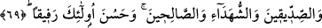

düşüren şeylerden tevbe etmekten tâat ve ibâdetlerle Allah’a dönmekten, tefrîd sırrına
vâsıl olan bir mürşid-i kâmile kulak vererek, emir ve öğüdünü kabul edip nefsini onun
terbiyesine teslîm ederek ve bu yolda murâkabeye devamla kendi varlığından geçmekten
başka çaren yoktur. Bununla beraber, başarı yalnız Allah’tandır.
69- Kim Allah’a ve Râsûl’e itâat ederse işte onlar, Allah’ın kendilerine lütuflarda
bulunduğu peygamberler, sıddîklar, şehidler ve sâlihlerle berâberdir. Onlar ne güzel
arkadaştır!
“Kim Allah’a ve Rasûl’e itâat ederse...” Buradaki itâatten maksat, bütün emir ve
yasaklara tam anlamıyla uyup boyun eğmektir.
Rivâyet edilir ki Rasûlullah (s.a.v.)’in azadlı kölesi Sevbân (r.a.) bir gün beti benzi
atmış, vücudu zayıflamış bir vaziyette onun yanına geldi. Rasûlullah (s.a.v), ona bunun
sebebini sorunca: “Hiç bir ağrım yok. Ancak sizi göremeyince özledim ve müthiş bir
yalnızlık hissine kapıldım. Sonra âhireti hatırladım da ya sizi orada göremezsem ne
yaparım diye endişelendim. Çünkü biliyorum ki siz orada peygamberlerle berâber
olacaksınız. Ben ise cennete girdirilsem bile sizin makamınızdan çok daha aşağı bir
makamda olacağım. Cennete girdirilmediğim takdirde ise sizi ebediyyen
göremeyeceğim.” dedi. İşte bu âyet bunun üzerine nâzil oldu.
Peygamber Efendimiz (s.a.v) şöyle buyurmaktadır: “Canımı elinde tutan Allah’a
yemin olsun ki hiç bir kul ben kendisine canından, ana babasından, âilesinden,
çocuklarından ve bütün insanlardan daha sevgili olmadıkça gerçekten îmân etmiş
olmaz.”[69]
“İşte onlar” o itâat edenler, “Allah’ın kendilerine lütuflarda bulunduğu” Allah’ın
kendilerine nimetlerini tamamladığı “peygamberler, sıddîklar, şehidler ve sâlihlerle
berâberdir.» Âyette mü’minler ibâdet ve tâata teşvik edilmektedir. Çünkü onlara
itâatları sâyesinde Allah’a en yakın ve O’nun katında dereceleri en yüksek kullarla
berâber olmaları va’dedilmiştir. Peygamberler, ilim ve amelin doruk noktasına ulaşıp
başkalarını da kemâle erdirme mertebesindedir. Sıddîklar, söz ve fiillerinde son derece
doğru ve ihlâslı olanlardır. Onların nefsleri bâzen huccet ve âyetleri tefekkür
merdiveniyle bâzen de tasfiye ve riyâzât basamaklarıyla irfânın zirvesine yükselir.
Nihâyet varlıkların aslına muttalî olup onların mâhiyetinden haber verirler. Şehidler,
kendilerini tâate hırsları ve hakkı ortaya çıkarmada azimli çalışmaları harekete geçiren,
sonunda i’lâ-yı kelimetullah, Allah’ın adını yüceltmek uğurunda canlarını fedâ eden
kimselerdir. Sâlihler ise ömürlerini Allah’a itâatte, mallarını da O’nun rızâsına ulaşmak